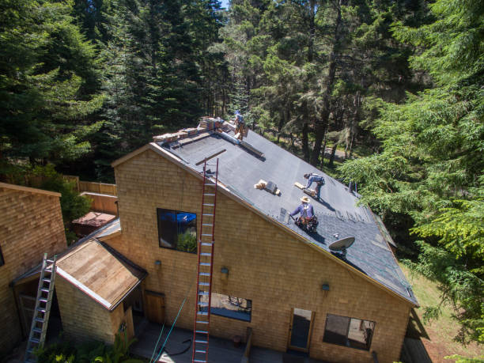
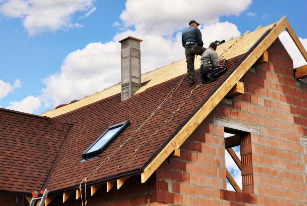

Calabash North Carolina
info@brimskylightrepairs.xyz
Calabash North Carolina
info@brimskylightrepairs.xyz

Expert skylight repairs in Calabash North Carolina . Fix leaks, enhance natural light, and improve energy efficiency. Trust our skilled team for quality, lasting results. Contact us for a free quote today!
Click Here To Call Us (877) 848-1711At Brim Skylight Repairs, we offer expert skylight repair services across Calabash North Carolina . Our team of skilled professionals is committed to delivering exceptional repair solutions to keep your skylights functioning optimally and enhancing your property's appeal.
Skylights are a beautiful way to brighten up your home or business with natural light, but they can encounter issues over time. Common problems include leaks, cracks, and poor insulation, which can lead to water damage, increased energy costs, and reduced efficiency. Our experienced technicians are here to address these issues promptly and effectively.
In Calabash North Carolina we provide comprehensive skylight repair services that tackle everything from minor leaks to major repairs. Using the latest tools and high-quality materials, we ensure that your skylights are restored to their best condition. Our repairs not only fix existing problems but also improve the overall durability and performance of your skylights, helping to maintain a comfortable and energy-efficient environment.
Brim Skylight Repairs prioritizes customer satisfaction by offering reliable and professional services. Whether you need a quick fix or a complete overhaul, our goal is to provide solutions that extend the lifespan of your skylights and keep your space well-lit and inviting.
Contact Brim Skylight Repairs in Calabash North Carolina today to schedule a consultation or request a free quote. Trust us to keep your skylights in top shape and your space bright and welcoming.
Residential & commercial Skylight repairs
Quality services at affordable prices
Immediate 24/ 7 emergency services


Determining whether your skylight is leaking is crucial for maintaining a safe and comfortable home in Calabash North Carolina . At Brim Skylight Repairs, we understand the importance of early detection to prevent further damage and costly repairs.
One of the first signs of a leaking skylight is the appearance of water stains or discoloration on your ceiling or walls. These stains often indicate that water is seeping through the skylight and causing damage to your interior. Pay close attention to areas around the skylight, especially after heavy rain or snow.
Another common indicator is the presence of damp or musty odors in the vicinity of the skylight. Moisture accumulation can lead to mold growth, which not only affects the air quality but also weakens the structural integrity of your home.
Additionally, check for visible damage to the skylight’s frame, seals, and flashing. Cracked glass, deteriorated seals, or warped frames can allow water to penetrate. If you notice any of these issues, it’s essential to address them promptly.
You might also experience condensation between the panes of glass if your skylight is double-glazed. This fogging effect suggests that the seal has failed, allowing moisture to enter.
If you suspect a leak but are unsure, it’s best to consult a professional. At Brim Skylight Repairs, our experts in Calabash North Carolina can conduct a thorough inspection to identify and resolve any issues, ensuring your skylight is watertight and your home remains protected. Contact us today for a comprehensive evaluation and reliable repair solutions.
Residential & commercial Skylight repairs
Quality services at affordable prices
Immediate 24/ 7 emergency services
When you need skylight services, working with local skylight contractors can make a significant difference. At Skylight repairs, our local contractors in Calabash North Carolina understand the unique climate and architectural styles of the area, which allows us to offer tailored repair solutions. We pride ourselves on our community ties and dedication to customer service, ensuring that you receive attentive and personalized care. Choose us for local expertise combined with quality services that keep your skylights in optimal condition.

Regular maintenance is the key to preventing costly skylight repairs. At Skylight repairs, we offer comprehensive skylight repair and maintenance services to ensure your skylights remain in optimal condition. Our team schedules regular inspections and maintenance services designed to catch issues early and prolong the life of your skylights.
Whether it involves cleaning, sealing, or making minor repairs, our maintenance services are thorough and efficient. We educate our clients on best practices to care for their skylights, helping to prevent bigger problems down the road. Trust us for your skylight repair and maintenance needs, and enjoy peace of mind knowing your installations are expertly cared for.

When skylight glass becomes damaged, replacing it swiftly is crucial to prevent leaks and further damage. At Skylight repairs, we offer professional skylight glass replacement services . Our team carefully assesses the damage and provides high-quality replacement glass that meets your skylight’s specifications. With precise installation techniques, we ensure a perfect fit that restores your skylight’s beauty and functionality. Trust us for a quick and hassle-free glass replacement process.

Automatic skylights provide added convenience, but when the motor malfunctions, it can be frustrating. At Skylight repairs, we specialize in skylight motor repair services in Calabash North Carolina . Our experienced technicians can diagnose motor issues and implement effective repair solutions to restore your skylight’s functionality. Whether it’s a simple fix or a complex problem, we are dedicated to providing top-quality service that gets your automatic skylights back in working order promptly.

Homes benefit immensely from the natural light and ventilation provided by skylights. However, wear and tear can lead to repairs being necessary. At Skylight repairs, we provide specialized skylight repair for homes ensuring your skylights are in pristine condition. Our expert team conducts thorough assessments, identifies problems quickly, and implements effective solutions to restore your skylights’ beauty and functionality. We use quality materials for every repair, ensuring long-lasting results that improve your living space.
A business’s interior can vastly benefit from natural light, especially when skylights are properly maintained. At Skylight repairs, we offer skylight repair for businesses designed to minimize disruptions while ensuring you can continue your operations smoothly. Our experienced technicians work efficiently to handle repairs, keeping your skylights in ideal condition to inspire creativity and productivity in your workplace. Choose us for reliable service and expert repairs that will elevate your commercial space.

Choosing professionals for your skylight repair needs is crucial to ensure quality and reliability. At Skylight repairs, our skylight repair professionals are industry leaders with extensive training and experience. We are equipped with the latest technologies and tools to diagnose and address any skylight-related problems effectively. Our commitment to continuous education means we stay ahead of trends and techniques in the industry, guaranteeing that you receive the best service available. Choose our team for your skylight needs for unparalleled expertise and craftsmanship.

Maintaining your skylights shouldn’t break the bank. At Skylight repairs, we offer affordable skylight maintenance services in Calabash North Carolina designed to keep your skylights in top shape without compromising quality. Regular maintenance is essential to prolonging the life and efficiency of your skylights, and our services are aimed at preventing costly repairs down the line.
Our experienced team provides thorough inspections, cleaning, and preventative repairs that ensure your skylights are functional and beautiful. You can count on us for reliable service that aligns with your budget, ensuring you get the best value for your investment. Choose us for affordable skylight maintenance and keep your skylights shining bright for years to come.
Years Experience
Expert Technicians
Satisfied Clients
Compleate Projects
At Brim Skylight Repairs, we understand that your skylight is more than just a window—it’s a key element of your home’s design and energy efficiency. Serving Calabash North Carolina and the surrounding areas, we are committed to delivering exceptional skylight repair services that not only restore functionality but also enhance the aesthetic appeal of your property.
Our team of highly skilled technicians brings years of experience and expertise to every job, ensuring precise and reliable repairs. Whether you’re dealing with leaks, broken glass, damaged frames, or faulty seals, Brim Skylight Repairs has the knowledge and tools to address the issue effectively. We use only the highest quality materials and cutting-edge techniques to ensure lasting results and optimal performance.
What sets us apart is our dedication to customer satisfaction. From your initial consultation to the completion of the repair, we provide clear communication, transparent pricing, and a commitment to excellence. We take pride in our reputation for timely and professional service, and we always go the extra mile to exceed your expectations.
Choosing Brim Skylight Repairs means choosing peace of mind. We are fully licensed and insured, and our work is backed by comprehensive warranties. Don’t let skylight issues compromise the comfort and beauty of your home. Contact us today to schedule your repair and experience the unparalleled service that has made us the top choice in Calabash North Carolina . Your skylight will thank you!
When searching for skylight repair near me, you want a reliable service that will address your needs promptly and professionally. At Skylight repairs, we specialize in skylight repairs that enhance the safety and beauty of your home or business. Our team of experienced technicians is located right here in Calabash North Carolina ready to tackle any issues you may have with your skylights. Whether it’s a simple leak or extensive damage, we are equipped with the knowledge and tools necessary to provide effective solutions. Our commitment to quality workmanship ensures that your skylights will be restored to their former glory, bringing natural light into your space while maintaining energy efficiency.
Throughout the years, we’ve built a reputation for reliability, affordability, and exceptional customer service. Our transparent consultation process and competitive pricing set us apart from the competition. Plus, we pride ourselves on using industry-leading materials that ensure durability and longevity. If you need skylight repair services, look no further than Skylight repairs .
At Skylight repairs, we understand the importance of affordability in home and business maintenance. That’s why we offer affordable skylight repair services without compromising on quality. Skylight issues can occur unexpectedly, and repairs can sometimes be costly. However, our skilled team is dedicated to providing solutions that meet your budget needs while delivering professional service.
We use innovative techniques and materials that minimize costs and maximize effectiveness, ensuring your skylight repairs last. Our commitment to affordability means you won’t have to sacrifice quality for price. Additionally, our regular maintenance plans can help you prevent unexpected repairs in the future, saving you money in the long run. Trust us to provide the best quality at competitive rates .
When it comes to skylight repairs, you want the best service available. That's where Skylight repairs steps in! We are proud to provide the best skylight repair services in Calabash North Carolina underscored by customer reviews that speak to our unmatched craftsmanship and commitment. Our skilled team is equipped with the latest technology and tools to ensure thorough inspections and expert repairs. With us, you can expect punctual service, detailed attention to your skylight issues, and a guarantee that your skylight will be restored efficiently and effectively.
Natural light can transform your home, making it feel more open and inviting. However, damaged skylights can turn that dream into a nightmare, leading to leaks and energy inefficiency. At Skylight repairs, we specialize in residential skylight repair services in Calabash North Carolina . Whether you have a small leak or a shattered glass panel, our experienced professionals can quickly assess and resolve the issue, ensuring your home remains beautiful and functional. Our commitment to quality means you can trust us to use top-grade materials and techniques, ensuring a lasting repair for your residence.
In the heart of any thriving business lies a commitment to creating an inviting atmosphere. Skylights can play a critical role in achieving such an ambiance. At Skylight repairs, our commercial skylight repair services focus on minimizing disruption to your operations while providing high-quality repairs. We recognize that time is money, so we work efficiently and effectively, ensuring that your business benefits from our prompt service without compromising quality. Our experienced technicians utilize commercial-grade materials suited for the demands ofbusiness environments.
When searching for local skylight repair contractors, it’s crucial to find a team you can trust. At Skylight repairs, we are proud to be the leading local skylight repair contractors . Our technicians are not only skilled and experienced, but they also understand the unique challenges presented in this area. We are committed to providing personalized service and solutions that meet your specific needs. From beginning to end, our local team ensures that your skylight repair project is handled with care and professionalism, leaving you satisfied with the results.
Leaks in skylights can lead to severe damage and costly repairs, making prompt attention essential. Our skylight leak repair services in Calabash North Carolina are designed to effectively address leaks at their source. At Skylight repairs, we specialize in diagnosing and repairing skylight leaks, no matter how complicated the issue may be.
Our expert technicians apply state-of-the-art leak detection methods and techniques to ensure we find and fix the problem quickly. After repair, we conduct comprehensive inspections to ensure the integrity of your skylights is restored. With our commitment to quality and thoroughness, we guarantee your satisfaction. Don't let a skylight leak disrupt your peace of mind; trust Skylight repairs for reliable repairs .
Skylights may fail unexpectedly, leading to potential leaks or structural damage. When disaster strikes, you need immediate solutions, and that’s where Skylight repairs comes in with our emergency skylight repair services . Our team is available 24/7, ready to respond to urgent calls. We prioritize emergency situations and utilize a streamlined process to quickly assess the problem, implement temporary fixes, and schedule permanent repairs. With our extensive experience, you can count on us to bring peace of mind during any skylight emergency.
Damaged or cracked skylight glass can diminish the aesthetics of your home or business and allow moisture to penetrate. At Skylight repairs, we specialize in skylight glass repair providing thorough evaluations to ensure a comprehensive approach to your repair needs. Whether it’s a simple crack or more extensive damage, our skilled technicians will provide prompt, professional service using high-quality glass products designed for durability. With our commitment to quality, we ensure your skylight glass repair will enhance both beauty and functionality.
The roof is your home’s first line of defense against the elements, and your skylight plays an integral role in that protection. If you’re facing issues with your skylight roof, our experts at Skylight repairs are here to assist you with exceptional skylight roof repair services .
We specialize in diagnosing and repairing all types of skylight roof problems, ensuring that they are restored to perfect condition. Our team is aware of the importance of proper installation and maintenance, and thus we approach each project with precision and care. By choosing us for your skylight roof repairs, you are opting for expertise, reliability, and quality service.
Trust is essential when choosing a contractor for your skylight repairs. At Skylight repairs, we pride ourselves on delivering professional skylight repair services in Calabash North Carolina . Our expert technicians are fully trained, insured, and knowledgeable about various skylight types, ensuring every repair meets industry standards. We use the latest materials and technology to provide a long-lasting solution to your skylight issues. Our commitment to outstanding service makes us a top choice for residents and business owners alike.
Skylight domes are stylish and functional, but they can face unique challenges due to their design. Whether it's a cracked dome or cloudiness caused by age, Skylight repairs specializes in skylight dome repair services . Our technicians have extensive knowledge of various dome styles and materials, allowing them to provide precise and effective repair options. We work diligently to restore the clarity and functionality of your skylight dome, ensuring that your indoor space remains bright and inviting. Trust our commitment to excellence and let us enhance the beauty of your skylights.
Skylight windows are a beautiful addition to any space, but they can also be susceptible to damage. If you're in need of skylight window repair services Skylight repairs is here to help. Our specialists focus on addressing issues such as condensation, seal failure, and cracks, ensuring that your skylight windows are both functional and visually appealing. We use industry-leading materials and proven techniques to deliver durable repairs, so you can enjoy the beauty of natural light in your home or business without worry.
Understanding the cost associated with skylight repairs can facilitate informed decision-making. At Skylight repairs, we provide free skylight repair cost estimates . Our approach involves a comprehensive assessment of your existing skylight situation, allowing us to offer transparent pricing that reflects the scope of work needed. We recognize the importance of budget-friendly solutions without compromising quality, and our detailed estimates ensure you’re fully aware of the costs involved. Choose us for clear communication and fair pricing tailored to meet your repair needs.
If you’re looking to install new skylights or repair existing ones, Skylight repairs is your go-to for skylight installation and repair services in Calabash North Carolina . Our team combines expertise with craftsmanship to provide services that enhance your home’s aesthetic and functional qualities. Whether replacing an old skylight or fixing a leak, we ensure that all work is completed with precision. You can trust us to manage every detail, from sourcing high-quality skylights to expert installation and thorough repairs.
Every skylight is unique, and sometimes, standard repairs just won't cut it. That’s where our custom skylight repairs come into play. At Skylight repairs, we understand the varying designs and styles of skylights present in homes and businesses . We specialize in creating tailored solutions for your specific skylight issues, ensuring that the repairs match your unique architectural needs. Our skilled technicians will work with you to develop a comprehensive repair strategy that not only meets but exceeds your expectations.
Proper flashing is crucial to preventing leaks and ensuring the functionality of your skylights. If you're facing problems with the flashing around your skylights, our skylight flashing repair services in Calabash North Carolina are designed to address these issues effectively. At Skylight repairs, our experienced professionals understand the importance of proper sealing and flashing techniques. We will inspect your skylight flashing, perform necessary repairs, and keep your skylight in prime condition, safeguarding your property from potential water damage.
Keeping your skylight clean is crucial for maintaining its clarity and functionality. At Brim Skylight Repairs, we understand that a spotless skylight not only enhances your home's appearance but also maximizes natural light and energy efficiency. Here’s a step-by-step guide to the best way to clean your skylight in Calabash North Carolina .
First, ensure safety by using a sturdy ladder and proper fall protection if you need to reach high areas. Always check the weather forecast to avoid cleaning on windy or rainy days. For standard cleaning, start by removing loose debris like leaves and dust from the skylight surface with a soft brush or cloth.
Next, mix a gentle cleaning solution of mild dish soap and water. Using a non-abrasive sponge or cloth, gently scrub the skylight to remove any dirt or stains. Avoid harsh chemicals or abrasive materials, as these can scratch or damage the glass.
Rinse the skylight thoroughly with clean water to remove any soap residue. For hard-to-reach skylights, consider using a squeegee or contacting a professional cleaner to avoid potential accidents.
Lastly, inspect your skylight for any signs of damage or wear. Regular cleaning and prompt repairs can prevent issues such as leaks and ensure your skylight remains in excellent condition.
For expert advice and professional skylight cleaning services in Calabash North Carolina trust Brim Skylight Repairs. Our team is dedicated to providing top-notch service and maintaining the pristine condition of your skylight. Contact us today to schedule a consultation!
Calabash is a small fishing town in Brunswick County, North Carolina, United States. As of the 2020 census, the population of the town was 2,011. It is known as the 'Seafood Capital of the World' because of the town's seafood restaurants.
Yes, we service both residential and commercial properties for skylight repairs and maintenance in Calabash North Carolina .
Yes, fixing leaks and drafts can improve energy efficiency by preventing heat loss and reducing your energy bills .
Yes, we specialize in repairing and replacing skylight flashing to prevent leaks .
Yes, we repair solar-powered skylights, ensuring they operate efficiently and provide proper ventilation .
Yes, we provide emergency repair services to address leaks and damage that need immediate attention .
Regular inspections, cleaning, and prompt repairs can help maintain your skylight and prevent leaks .
Yes, we can repair or replace cracked or damaged skylight frames to ensure they are structurally sound .
Noise can indicate loose components or wind infiltration. Contact us for an inspection to fix the issue .
Yes, we provide warranties on our repair work to ensure long-lasting results .
If the skylight is still structurally sound, repair can be a cost-effective solution. If it's very old, replacement may be better .
Leaks are often caused by damaged seals, improper installation, or wear and tear over time. We can identify and fix the issue .
Yes, we offer solutions to improve skylight ventilation and prevent moisture buildup in your home or business .
Most skylight repairs are completed within a few hours, depending on the extent of the issue in Calabash North Carolina .
We offer same-day repair services for urgent issues, depending on availability .
Yes, we repair skylight damage caused by hail, including cracked glass and dented frames in Calabash North Carolina .
Regular maintenance and addressing minor issues early can help prevent cracking. We can help with inspections and repairs .
We specialize in skylight repair, replacement, sealing, and leak prevention services for homes and businesses in Calabash North Carolina .
Yes, we specialize in identifying and repairing leaks to ensure your skylight is watertight .
Common signs include leaks, drafts, condensation, or visible damage to the glass or frame. We can provide a professional inspection in Calabash North Carolina .
Yes, we offer repair and replacement services for skylight blinds and shades .
Yes, we are fully licensed and insured to provide skylight repair services .
Yes, in addition to repairs, we offer professional skylight installation for homes and businesses in Calabash North Carolina .
Yes, we repair and replace damaged flashing around skylights to prevent water intrusion in Calabash North Carolina .
Costs vary based on the extent of the damage, but we offer free estimates to give you a clear idea of the repair cost in Calabash North Carolina .
Yes, we can address condensation issues by improving insulation and ventilation around your skylight .
We repair all types of skylights, including fixed, vented, tubular, and custom skylights .
Yes, we can replace broken or damaged skylight glass to restore its clarity and function .
We recommend an annual inspection to catch potential issues early and prevent costly damage .
Yes, if your skylight is beyond repair, we offer complete skylight replacement services .
Proper sealing and insulation can prevent fogging. We can assess your skylight and offer solutions in Calabash North Carolina .
Brim Skylight Repairs provided outstanding service for our skylight repair in Calabash North Carolina . Their team was prompt, professional, and efficient, ensuring the job was done right the first time. We’re very happy with their work and would recommend them to anyone in need of skylight repairs.
Profession
Brim Skylight Repairs did an outstanding job fixing our skylight in Calabash North Carolina . Their technicians were knowledgeable and completed the repair quickly. The skylight is now in perfect condition, and we’re very pleased with their excellent service and professionalism.
Profession
Brim Skylight Repairs is fantastic. They fixed our skylight in Calabash North Carolina with great professionalism and care. The repair was done efficiently, and the skylight is now in perfect condition. We’re very happy with the service and would definitely use them again!
Profession
Calabash NC Skylight repairs Pros
(877) 848-1711
info@brimskylightrepairs.xyz
09.00 AM - 09.00 PM
09.00 AM - 12.00 PM